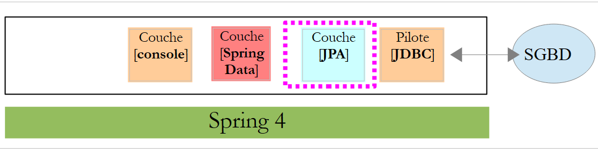
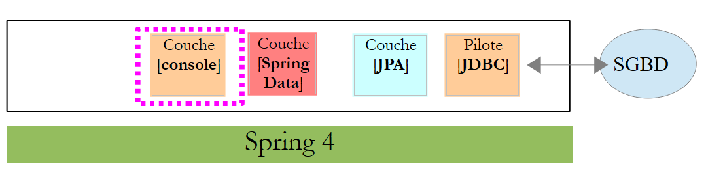
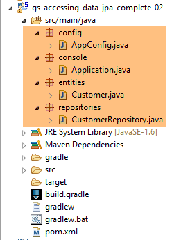
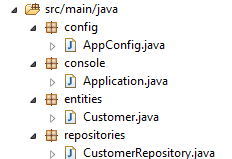
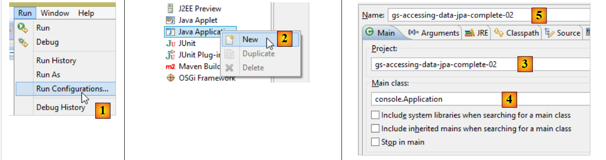
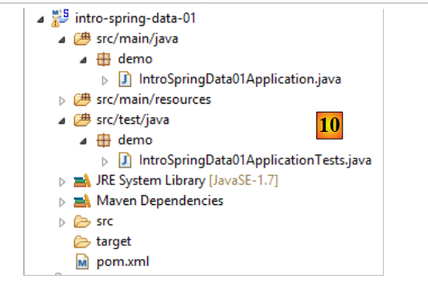

5. Introducción a Spring Data JPA
En este capítulo, vamos a estudiar la siguiente arquitectura:
 |
Se intercala una capa [JPA] (Java Persistence API) entre la capa [DAO] y el controlador JDBC del SGBD. Ahora es la capa JPA la que emite las órdenes SQL destinadas al SGBD. La capa [DAO] ya no maneja órdenes SQL, sino únicamente objetos denominados entidades JPA, que son imágenes de las diferentes tablas de la base de datos utilizada. Los campos de estas entidades se asocian de forma única a columnas de tablas mediante anotaciones Java. Esto es lo que permite a la capa JPA traducir a SQL las operaciones de la capa [DAO] realizadas sobre las entidades JPA.
Spring Data es una rama de Spring dedicada al acceso a los datos, ya sea que estos se alojen en una base de datos relacional SGBDR, una base NOSQL u otros tipos de repositorios. Aquí solo nos interesan los SGBDR y su acceso a través de JPA. Más adelante, en ocasiones escribiremos [Spring JPA] para referirnos, en realidad, a [Spring Data JPA]. En la arquitectura anterior, la capa [Spring Data] proporciona facilidades a la capa [DAO] para gestionar las entidades JPA.
JPA es, en realidad, una especificación. Probaremos tres de sus implementaciones:
- Hibernate (http://hibernate.org/);
- EclipseLink (http://www.eclipse.org/eclipselink/);
- OpenJpa (http://openjpa.apache.org/);
5.1. Ejemplo-01
En la página web de Spring hay numerosos tutoriales para iniciarse en Spring [http://spring.io/guides]. Vamos a utilizar uno de ellos para presentar Spring Data. Para ello, utilizamos Spring Tool Suite (STS).
 |
- en [1], importamos uno de los tutoriales de [spring.io/guides];
 |
- en [2], seleccionamos el tutorial [Accessing Data Jpa] que muestra cómo acceder a una base de datos con Spring Data;
- en [3], se elige un proyecto configurado por Maven;
- en [4], el tutorial puede presentarse de dos formas: [initial], que es un version vacío que se rellena siguiendo el tutorial, o [complete], que es el version final del tutorial. Elegimos este último;
- en [5], podemos elegir ver el tutorial en un navegador;
- en [6], el proyecto final.
5.1.1. La configuración de Maven del proyecto
Las dependencias de Maven del proyecto se configuran en el archivo [pom.xml]:
<groupId>org.springframework</groupId>
<artifactId>gs-accessing-data-jpa</artifactId>
<version>0.1.0</version>
<parent>
<groupId>org.springframework.boot</groupId>
<artifactId>spring-boot-starter-parent</artifactId>
<version>1.2.3.RELEASE</version>
</parent>
<dependencies>
<dependency>
<groupId>org.springframework.boot</groupId>
<artifactId>spring-boot-starter-data-jpa</artifactId>
</dependency>
<dependency>
<groupId>com.h2database</groupId>
<artifactId>h2</artifactId>
</dependency>
</dependencies>
<properties>
<!-- utilizar UTF-8 para todo -->
<project.build.sourceEncoding>UTF-8</project.build.sourceEncoding>
<project.reporting.outputEncoding>UTF-8</project.reporting.outputEncoding>
<start-class>hello.Application</start-class>
</properties>
- líneas 5-9: definen un proyecto Maven padre. Es este el que define la mayor parte de las dependencias del proyecto. Pueden ser suficientes, en cuyo caso no se añaden más, o no, en cuyo caso se añaden las dependencias que faltan;
- líneas 12-15: definen una dependencia de [spring-boot-starter-data-jpa]. Este artefacto contiene las clases de Spring Data;
- líneas 16-19: definen una dependencia de SGBD y H2, que permiten crear y gestionar bases de datos en memoria.
Veamos las clases que aportan estas dependencias:
 |  |  |
Son muchas:
- algunas pertenecen al ecosistema Spring (las que empiezan por spring);
- otras pertenecen al ecosistema Hibernate (hibernate, jboss), de las que aquí se utiliza la implementación JPA;
- otras son bibliotecas de pruebas (junit, hamcrest);
- otras son bibliotecas de registros (log4j, logback, slf4j);
Las vamos a conservar todas. Para una aplicación en producción, habría que conservar solo las que sean necesarias.
En la línea 26 del archivo [pom.xml] encontramos la línea:
<start-class>hello.Application</start-class>
Esta línea está relacionada con las siguientes:
<build>
<plugins>
<plugin>
<artifactId>maven-compiler-plugin</artifactId>
</plugin>
<plugin>
<groupId>org.springframework.boot</groupId>
<artifactId>spring-boot-maven-plugin</artifactId>
</plugin>
</plugins>
</build>
Líneas 6-9: el complemento [spring-boot-maven-plugin] permite generar el ejecutable jar de la aplicación. La línea 26 del archivo [pom.xml] designa entonces la clase ejecutable de este jar.
5.1.2. La capa [JPA]
El acceso a la base de datos se realiza a través de una capa [JPA], Java Persistence API:
 |
 |
La aplicación es básica y gestiona clients [Customer]. La clase [Customer] forma parte de la capa [JPA] y es la siguiente:
package hello;
import javax.persistence.Entity;
import javax.persistence.GeneratedValue;
import javax.persistence.GenerationType;
import javax.persistence.Id;
@Entity
public class Customer {
@Id
@GeneratedValue(strategy = GenerationType.AUTO)
private long id;
private String firstName;
private String lastName;
protected Customer() {
}
public Customer(String firstName, String lastName) {
this.firstName = firstName;
this.lastName = lastName;
}
@Override
public String toString() {
return String.format("Customer[id=%d, firstName='%s', lastName='%s']", id, firstName, lastName);
}
}
Un cliente tiene un identificador [id], un nombre [firstName] y un apellido [lastName]. Cada instancia [Customer] representa una fila de una tabla de la base de datos.
- línea 8: anotación JPA que hace que la persistencia de las instancias [Customer] (Create, Read, Update, Delete) vaya a ser gestionada por una implementación JPA. Según las dependencias de Maven, se observa que se utiliza la implementación JPA / Hibernate;
- líneas 11-12: anotaciones JPA que asocian el campo [id] a la clave primaria de la tabla [Customer]. La línea 12 indica que la implementación JPA utilizará el método de generación de clave primaria propio del SGBD utilizado, en este caso H2;
No hay otras anotaciones para JPA. En ese caso, se utilizarán los valores por defecto:
- la tabla de [Customer] llevará el nombre de la clase, es decir, [Customer];
- las columnas de esta tabla llevarán el nombre de los campos de la clase: [id, firstName, lastName], teniendo en cuenta que no se distingue entre mayúsculas y minúsculas en el nombre de una columna de tabla;
Cabe señalar que en ningún momento se menciona la implementación JPA utilizada.
5.1.3. La capa [Spring Data]
La clase [CustomerRepository] implementa la capa de acceso a la tabla [Customer]. Su código es el siguiente:
 |
 |
package hello;
import java.util.List;
import org.springframework.data.repository.CrudRepository;
public interface CustomerRepository extends CrudRepository<Customer, Long> {
List<Customer> findByLastName(String lastName);
}
Por lo tanto, se trata de una interfaz y no de una clase (línea 7). Extiende la interfaz [CrudRepository], una interfaz de Spring Data (línea 5). Esta interfaz está parametrizada por dos tipos: el primero es el tipo de los elementos gestionados, en este caso el tipo [Customer]; el segundo, el tipo de la clave primaria de los elementos gestionados, en este caso un tipo [Long]. La interfaz [CrudRepository] es la siguiente:
package org.springframework.data.repository;
import java.io.Serializable;
@NoRepositoryBean
public interface CrudRepository<T, ID extends Serializable> extends Repository<T, ID> {
<S extends T> S save(S entity);
<S extends T> Iterable<S> save(Iterable<S> entities);
T findOne(ID id);
boolean exists(ID id);
Iterable<T> findAll();
Iterable<T> findAll(Iterable<ID> ids);
long count();
void delete(ID id);
void delete(T entity);
void delete(Iterable<? extends T> entities);
void deleteAll();
}
Esta interfaz define las operaciones CRUD (Crear – Leer – Actualizar – Eliminar) que se pueden realizar sobre un tipo JPA T:
- línea 8: el método save permite persistir una entidad T en la base de datos. Hace que la entidad se persista con la clave primaria que le ha asignado SGBD. También permite actualizar una entidad T identificada por su clave primaria id. La elección de una u otra acción se realiza en función del valor de la clave primaria id: si este es nulo, se lleva a cabo la operación de persistencia; en caso contrario, se realiza la operación de actualización;
- línea 10: lo mismo, pero para una lista de entidades;
- línea 12: el método findOne permite recuperar una entidad T identificada por su clave primaria id;
- línea 22: el método delete permite eliminar una entidad T identificada por su clave primaria id;
- líneas 24-28: variantes del método [delete];
- línea 16: el método [findAll] permite recuperar todas las entidades persistentes T;
- línea 18: lo mismo, pero limitado a las entidades cuya lista de identificadores se ha pasado;
Volvamos a la interfaz [CustomerRepository]:
package hello;
import java.util.List;
import org.springframework.data.repository.CrudRepository;
public interface CustomerRepository extends CrudRepository<Customer, Long> {
List<Customer> findByLastName(String lastName);
}
- la línea 9 permite encontrar un [Customer] por su nombre [lastName];
Y eso es todo para la capa [DAO]. No hay ninguna clase de implementación de la interfaz anterior. Esta se genera en tiempo de ejecución mediante [Spring Data]. Los métodos de la interfaz [CrudRepository] se implementan automáticamente. En cuanto a los métodos añadidos en la interfaz [CustomerRepository], depende. Volvamos a la definición de [Customer]:
private long id;
private String firstName;
private String lastName;
El método de la línea 9 se implementa automáticamente mediante [Spring Data] porque hace referencia al campo [lastName] (línea 3) de [Customer]. Cuando encuentra un método [findBySomething] en la interfaz que se va a implementar, Spring Data lo implementa mediante la siguiente consulta JPQL (Java Persistence Query Language):
Por lo tanto, el tipo T debe tener un campo llamado [something]. Así, el método
se implementará mediante un código similar al siguiente:
return [em].createQuery("select c from Customer c where c.lastName=:value").setParameter("value",lastName).getResultList()
donde [em] designa el contexto de persistencia JPA. Esto solo es posible si la clase [Customer] tiene un campo llamado [lastName], lo cual es el caso.
En conclusión, en los casos sencillos, Spring Data nos permite implementar la capa [DAO] con una simple interfaz.
5.1.4. La capa [console]
 |
 |
La clase [Application] es la siguiente:
package hello;
import org.springframework.beans.factory.annotation.Autowired;
import org.springframework.boot.CommandLineRunner;
import org.springframework.boot.SpringApplication;
import org.springframework.boot.autoconfigure.SpringBootApplication;
@SpringBootApplication
public class Application implements CommandLineRunner {
@Autowired
CustomerRepository repository;
public static void main(String[] args) {
SpringApplication.run(Application.class);
}
@Override
public void run(String... strings) throws Exception {
// guardar un par de customers
repository.save(new Customer("Jack", "Bauer"));
repository.save(new Customer("Chloe", "O'Brian"));
repository.save(new Customer("Kim", "Bauer"));
repository.save(new Customer("David", "Palmer"));
repository.save(new Customer("Michelle", "Dessler"));
// recoger todos los customers
System.out.println("Customers found with findAll():");
System.out.println("-------------------------------");
for (Customer customer : repository.findAll()) {
System.out.println(customer);
}
System.out.println();
// recoger un cliente individual por ID
Customer customer = repository.findOne(1L);
System.out.println("Customer found with findOne(1L):");
System.out.println("--------------------------------");
System.out.println(customer);
System.out.println();
// recoger customers por last name
System.out.println("Customer found with findByLastName('Bauer'):");
System.out.println("--------------------------------------------");
for (Customer bauer : repository.findByLastName("Bauer")) {
System.out.println(bauer);
}
}
}
- línea 9: la clase implementa la interfaz [CommandLineRunner], que es una interfaz [Spring Boot] (línea 4). Esta interfaz solo tiene un método, el de la línea 19;
- línea 8: @SpringBootApplication es una anotación que agrupa varias anotaciones [Spring Boot]:
- @Configuration: indica que la clase es una clase de configuración;
- @EnableAutoConfiguration: solicita a [Spring Boot] que cree por sí mismo un determinado número de beans en función de diversas propiedades, en particular el contenido del Classpath del proyecto. Dado que las bibliotecas de Hibernate se encuentran en el Classpath, el bean [entityManagerFactory] se implementará con Hibernate. Dado que la biblioteca de SGBD H2 se encuentra en el Classpath, el bean [dataSource] se implementará con H2. En el bean [dataSource], también hay que definir el usuario y su contraseña. Aquí Spring Boot utilizará el administrador por defecto de H2, que no tiene contraseña. Como la biblioteca [spring-tx] está en el Classpath, se utilizará el gestor de transacciones de Spring;
- @EnableWebMvc: si en el Classpath se encuentra la biblioteca [spring-mvc]. En este caso, se realiza una autoconfiguración para la aplicación web;
- @ComponentScan: indica a Spring dónde buscar los demás beans, configuraciones y servicios. Aquí se buscan por defecto en el paquete que contiene la clase etiquetada, es decir, el paquete [hello]. Así se encontrarán las clases [Customer] y [CustomerRepository]. Dado que la primera tiene la anotación [@Entity], se catalogará como entidad que debe gestionar Hibernate. Dado que la segunda extiende la interfaz [CrudRepository], se registrará como bean de Spring;
- líneas 11-12: el bean [CustomerRepository] se inyecta en el código de la clase principal;
- línea 15: se ejecuta el método estático [run] de la clase [SpringApplication] del proyecto Spring Boot. Su parámetro es la clase que tiene una anotación [Configuration] o [EnableAutoConfiguration]. A continuación, se llevará a cabo todo lo explicado anteriormente. El resultado es un contexto de aplicación Spring, es decir, un conjunto de beans gestionados por Spring;
- líneas 19-48: las operaciones siguientes solo utilizan los métodos del bean que implementa la interfaz [CustomerRepository];
Los resultados de la consola son los siguientes:
. ____ _ __ _ _
/\\ / ___'_ __ _ _(_)_ __ __ _ \ \ \ \
( ( )\___ | '_ | '_| | '_ \/ _` | \ \ \ \
\\/ ___)| |_)| | | | | || (_| | ) ) ) )
' |____| .__|_| |_|_| |_\__, | / / / /
=========|_|==============|___/=/_/_/_/
:: Spring Boot :: (v1.2.2.RELEASE)
2015-03-10 15:35:43.661 INFO 5784 --- [ main] hello.Application : Starting Application on Gportpers3 with PID 5784 (started by ST in C:\Users\Serge Tahé\Documents\workspace-sts-3.6.3.RELEASE\gs-accessing-data-jpa-complete)
2015-03-10 15:35:43.708 INFO 5784 --- [ main] s.c.a.AnnotationConfigApplicationContext : Refreshing org.springframework.context.annotation.AnnotationConfigApplicationContext@5d11346a: startup date [Tue Mar 10 15:35:43 CET 2015]; root of context hierarchy
2015-03-10 15:35:45.230 INFO 5784 --- [ main] j.LocalContainerEntityManagerFactoryBean : Building JPA container EntityManagerFactory for persistence unit 'default'
2015-03-10 15:35:45.254 INFO 5784 --- [ main] o.hibernate.jpa.internal.util.LogHelper : HHH000204: Processing PersistenceUnitInfo [
name: default
...]
2015-03-10 15:35:45.331 INFO 5784 --- [ main] org.hibernate.Version : HHH000412: Hibernate Core {4.3.8.Final}
2015-03-10 15:35:45.332 INFO 5784 --- [ main] org.hibernate.cfg.Environment : HHH000206: hibernate.properties not found
2015-03-10 15:35:45.334 INFO 5784 --- [ main] org.hibernate.cfg.Environment : HHH000021: Bytecode provider name : javassist
2015-03-10 15:35:45.651 INFO 5784 --- [ main] o.hibernate.annotations.common.Version : HCANN000001: Hibernate Commons Annotations {4.0.5.Final}
2015-03-10 15:35:45.754 INFO 5784 --- [ main] org.hibernate.dialect.Dialect : HHH000400: Using dialect: org.hibernate.dialect.H2Dialect
2015-03-10 15:35:45.877 INFO 5784 --- [ main] o.h.h.i.ast.ASTQueryTranslatorFactory : HHH000397: Using ASTQueryTranslatorFactory
2015-03-10 15:35:46.154 INFO 5784 --- [ main] org.hibernate.tool.hbm2ddl.SchemaExport : HHH000227: Running hbm2ddl schema export
2015-03-10 15:35:46.169 INFO 5784 --- [ main] org.hibernate.tool.hbm2ddl.SchemaExport : HHH000230: Schema export complete
2015-03-10 15:35:46.779 INFO 5784 --- [ main] o.s.j.e.a.AnnotationMBeanExporter : Registering beans for JMX exposure on startup
Customers found with findAll():
-------------------------------
Customer[id=1, firstName='Jack', lastName='Bauer']
Customer[id=2, firstName='Chloe', lastName='O'Brian']
Customer[id=3, firstName='Kim', lastName='Bauer']
Customer[id=4, firstName='David', lastName='Palmer']
Customer[id=5, firstName='Michelle', lastName='Dessler']
Customer found with findOne(1L):
--------------------------------
Customer[id=1, firstName='Jack', lastName='Bauer']
Customer found with findByLastName('Bauer'):
--------------------------------------------
Customer[id=1, firstName='Jack', lastName='Bauer']
Customer[id=3, firstName='Kim', lastName='Bauer']
2015-03-10 15:35:47.040 INFO 5784 --- [ main] hello.Application : Started Application in 3.623 seconds (JVM running for 4.324)
2015-03-10 15:35:47.042 INFO 5784 --- [ Thread-1] s.c.a.AnnotationConfigApplicationContext : Closing org.springframework.context.annotation.AnnotationConfigApplicationContext@5d11346a: startup date [Tue Mar 10 15:35:43 CET 2015]; root of context hierarchy
2015-03-10 15:35:47.044 INFO 5784 --- [ Thread-1] o.s.j.e.a.AnnotationMBeanExporter : Unregistering JMX-exposed beans on shutdown
2015-03-10 15:35:47.046 INFO 5784 --- [ Thread-1] j.LocalContainerEntityManagerFactoryBean : Closing JPA EntityManagerFactory for persistence unit 'default'
2015-03-10 15:35:47.047 INFO 5784 --- [ Thread-1] org.hibernate.tool.hbm2ddl.SchemaExport : HHH000227: Running hbm2ddl schema export
2015-03-10 15:35:47.051 INFO 5784 --- [ Thread-1] org.hibernate.tool.hbm2ddl.SchemaExport : HHH000230: Schema export complete
- líneas 1-8: el logotipo del proyecto Spring Boot;
- línea 9: se ejecuta la clase [hello.Application];
- línea 10: [AnnotationConfigApplicationContext] es una clase que implementa la interfaz [ApplicationContext] de Spring. Se trata de un contenedor de beans;
- línea 11: el bean [entityManagerFactory] se implementa con la clase [LocalContainerEntityManagerFactory], una clase de Spring. Gestiona la capa [JPA];
- línea 12: aparece [Hibernate]. Se ha elegido esta implementación JPA;
- línea 19: un dialecto de Hibernate es la variante SQL que se utilizará con SGBD. Aquí, el dialecto [H2Dialect] indica que Hibernate va a trabajar con SGBD y H2;
- líneas 21-22: se crea la base de datos. Se crea la tabla [CUSTOMER]. Esto significa que Hibernate se ha configurado para generar las tablas a partir de las definiciones JPA; aquí, la definición JPA de la clase [Customer];
- líneas 26-30: resultado del método [findAll] de la interfaz;
- línea 34: resultado del método [findOne] de la interfaz;
- líneas 38-39: resultados del método [findByLastName];
- líneas 41 y siguientes: registros del cierre del contexto Spring.
5.1.5. Configuración manual del proyecto Spring Data
Duplicamos el proyecto anterior en el proyecto [gs-accessing-data-jpa-02]:
 |
En este nuevo proyecto, no vamos a basarnos en la configuración automática realizada por Spring Boot. La haremos manualmente. Esto puede resultar útil si las configuraciones predeterminadas no nos convencen.
En primer lugar, vamos a especificar las dependencias necesarias en el archivo [pom.xml]:
<?xml version="1.0" encoding="UTF-8"?>
<project xmlns="http://maven.apache.org/POM/4.0.0" xsi:schemaLocation="http://maven.apache.org/POM/4.0.0 http://maven.apache.org/maven-v4_0_0.xsd"
xmlns:xsi="http://www.w3.org/2001/XMLSchema-instance">
<modelVersion>4.0.0</modelVersion>
<groupId>org.springframework</groupId>
<artifactId>gs-accessing-data-jpa-02</artifactId>
<version>0.1.0</version>
<parent>
<groupId>org.springframework.boot</groupId>
<artifactId>spring-boot-starter-parent</artifactId>
<version>1.2.3.RELEASE</version>
</parent>
<dependencies>
<!-- Spring Data -->
<dependency>
<groupId>org.springframework.data</groupId>
<artifactId>spring-data-jpa</artifactId>
</dependency>
<!-- Hibernate -->
<dependency>
<groupId>org.hibernate</groupId>
<artifactId>hibernate-entitymanager</artifactId>
</dependency>
<!-- H2 Base de datos -->
<dependency>
<groupId>com.h2database</groupId>
<artifactId>h2</artifactId>
</dependency>
<!-- Tomcat JDBC -->
<dependency>
<groupId>org.apache.tomcat</groupId>
<artifactId>tomcat-jdbc</artifactId>
</dependency>
</dependencies>
<properties>
<!-- utiliza UTF-8 para todo -->
<project.build.sourceEncoding>UTF-8</project.build.sourceEncoding>
<project.reporting.outputEncoding>UTF-8</project.reporting.outputEncoding>
</properties>
<build>
<plugins>
<plugin>
<groupId>org.springframework.boot</groupId>
<artifactId>spring-boot-maven-plugin</artifactId>
</plugin>
</plugins>
</build>
<repositories>
<repository>
<id>spring-releases</id>
<name>Spring Releases</name>
<url>https://repo.spring.io/libs-release</url>
</repository>
<repository>
<id>org.jboss.repository.releases</id>
<name>JBoss Maven Release Repository</name>
<url>https://repository.jboss.org/nexus/content/repositories/releases</url>
</repository>
</repositories>
<pluginRepositories>
<pluginRepository>
<id>spring-releases</id>
<name>Spring Releases</name>
<url>https://repo.spring.io/libs-release</url>
</pluginRepository>
</pluginRepositories>
</project>
- líneas 10-14: el proyecto Maven principal, cuyas bibliotecas vamos a utilizar;
- líneas 18-21: Spring Data utilizado para acceder a la base de datos;
- líneas 23-26: la implementación de Hibernate de la especificación JPA;
- líneas 28-31: SGBD H2;
- líneas 33-36: las bases de datos suelen utilizarse con grupos de conexiones abiertas que evitan la apertura y el cierre repetidos de conexiones. En este caso, la implementación utilizada es la de [tomcat-jdbc];
En el nuevo proyecto, la entidad [Customer] y la interfaz [CustomerRepository] no sufren cambios. Se modificará la clase [Application], que se dividirá en dos clases:
- [Config], que será la clase de configuración:
- [Main], que será la clase ejecutable;
 |
La clase ejecutable [Application] es ahora la siguiente:
package console;
import org.springframework.context.annotation.AnnotationConfigApplicationContext;
import repositories.CustomerRepository;
import config.AppConfig;
import entities.Customer;
public class Application {
public static void main(String[] args) {
// instanciación del contexto Spring
AnnotationConfigApplicationContext context = new AnnotationConfigApplicationContext(AppConfig.class);
CustomerRepository repository = context.getBean(CustomerRepository.class);
// guardar un par de customers
repository.save(new Customer("Jack", "Bauer"));
repository.save(new Customer("Chloe", "O'Brian"));
repository.save(new Customer("Kim", "Bauer"));
repository.save(new Customer("David", "Palmer"));
repository.save(new Customer("Michelle", "Dessler"));
...
// cierre del contexto
context.close();
}
}
- línea 9: la clase [Application] ya no tiene anotaciones de configuración;
- líneas 3-7: cabe destacar que ya no hay importaciones de paquetes [Spring Boot];
- línea 12: se instancian los beans de Spring. Se obtiene el contexto de Spring que contiene la referencia de los beans así creados;
- línea 13: se solicita una referencia al bean de tipo [CustomerRepository];
La clase [Config] que configura el proyecto es la siguiente:
package config;
import javax.persistence.EntityManagerFactory;
import org.apache.tomcat.jdbc.pool.DataSource;
import org.springframework.context.annotation.Bean;
import org.springframework.context.annotation.Configuration;
import org.springframework.data.jpa.repository.config.EnableJpaRepositories;
import org.springframework.orm.jpa.JpaTransactionManager;
import org.springframework.orm.jpa.JpaVendorAdapter;
import org.springframework.orm.jpa.LocalContainerEntityManagerFactoryBean;
import org.springframework.orm.jpa.vendor.Database;
import org.springframework.orm.jpa.vendor.HibernateJpaVendorAdapter;
import org.springframework.transaction.PlatformTransactionManager;
import org.springframework.transaction.annotation.EnableTransactionManagement;
@EnableTransactionManagement
@EnableJpaRepositories(basePackages = { "repositories" })
@Configuration
// @ComponentScan(basePackages={"package1","package2"})
public class AppConfig {
// la base de datos H2
@Bean
public DataSource dataSource() {
// fuente de datos TomcatJdbc
DataSource dataSource = new DataSource();
// configuración de acceso JDBC
dataSource.setDriverClassName("org.h2.Driver");
dataSource.setUrl("jdbc:h2:./demo");
dataSource.setUsername("sa");
dataSource.setPassword("");
// una conexión abierta inicialmente
dataSource.setInitialSize(1);
// resultado
return dataSource;
}
// el proveedor JPA
@Bean
public JpaVendorAdapter jpaVendorAdapter() {
HibernateJpaVendorAdapter hibernateJpaVendorAdapter = new HibernateJpaVendorAdapter();
hibernateJpaVendorAdapter.setShowSql(false);
hibernateJpaVendorAdapter.setGenerateDdl(true);
hibernateJpaVendorAdapter.setDatabase(Database.H2);
return hibernateJpaVendorAdapter;
}
// EntityManagerFactory
@Bean
public EntityManagerFactory entityManagerFactory(JpaVendorAdapter jpaVendorAdapter, DataSource dataSource) {
LocalContainerEntityManagerFactoryBean factory = new LocalContainerEntityManagerFactoryBean();
factory.setJpaVendorAdapter(jpaVendorAdapter);
factory.setPackagesToScan("entities");
factory.setDataSource(dataSource);
factory.afterPropertiesSet();
return factory.getObject();
}
// Gestor de transacciones
@Bean
public PlatformTransactionManager transactionManager(EntityManagerFactory entityManagerFactory) {
JpaTransactionManager txManager = new JpaTransactionManager();
txManager.setEntityManagerFactory(entityManagerFactory);
return txManager;
}
}
- línea 17: la anotación [@EnableTransactionManagement] indica que deben interpretarse las anotaciones [@Transactional]. Los métodos de las interfaces [CrudRepository] tienen estas anotaciones. Por lo tanto, se ejecutan dentro de una transacción;
- línea 18: la anotación [@EnableJpaRepositories] permite designar las carpetas donde se encuentran las interfaces Spring Data y [CrudRepository]. Estas interfaces se convertirán en componentes Spring y estarán disponibles en su contexto;
- línea 19: la anotación [@Configuration] convierte la clase [Config] en una clase de configuración de Spring;
- línea 20: la anotación [@ComponentScan] permite enumerar las carpetas en las que se deben buscar los componentes Spring. Los componentes Spring son clases etiquetadas con anotaciones Spring como @Service, @Component, @Controller, etc. Aquí no hay más que los definidos dentro de la clase [AppConfig], por lo que la anotación se ha comentado;
- líneas 24-37: definen la fuente de datos, la base de datos H2. Es la anotación @Bean de la línea 25 la que convierte al objeto creado por este método en un componente gestionado por Spring. El nombre del método puede ser cualquiera. Sin embargo, debe llamarse [dataSource] si el EntityManagerFactory de la línea 51 no existe y se define mediante autoconfiguración;
- línea 30: la base de datos se llamará [demo] y se generará en la carpeta del proyecto;
- líneas 40-47: definen la implementación JPA utilizada, en este caso una implementación de Hibernate. El nombre del método puede ser cualquiera;
- línea 43: sin registros SQL;
- línea 44: la base de datos se creará si no existe;
- líneas 50-58: definen el EntityManagerFactory que gestionará la persistencia JPA. El método debe llamarse obligatoriamente [entityManagerFactory];
- línea 51: el método recibe dos parámetros del tipo de los dos beans definidos anteriormente. Estos serán construidos e inyectados por Spring como parámetros del método;
- línea 53: establece la implementación JPA utilizada;
- línea 54: establece las carpetas donde se encuentran las entidades JPA;
- línea 55: establece la fuente de datos que se va a gestionar;
- líneas 61-66: el gestor de transacciones. El método debe llamarse obligatoriamente [transactionManager]. Recibe como parámetro el bean de las líneas 51-58;
- línea 64: el gestor de transacciones se asocia a EntityManagerFactory;
Los métodos anteriores se pueden definir en cualquier orden.
La ejecución del proyecto da los mismos resultados. Aparece un nuevo archivo en la carpeta del proyecto, el de la base de datos H2:
 |
5.1.6. Creación de un archivo ejecutable
Para crear un archivo ejecutable del proyecto, se puede proceder de la siguiente manera:
 |
- en [1]: se crea una configuración de ejecución;
- en [2]: de tipo [Java Application]
- en [3]: se indica el proyecto que se va a ejecutar (utilice el botón «Browse»);
- en [4]: se indica la clase que se va a ejecutar;
- en [5]: el nombre de la configuración de ejecución; puede ser cualquiera;
 |
- en [6]: se exporta el proyecto;
- en [7]: en forma de archivo ejecutable JAR;
- en [8]: indica la ruta y el nombre del archivo ejecutable que se va a crear;
- en [9]: el nombre de la configuración de ejecución creada en [5];
10  |
- en [10], el archivo creado;
Una vez hecho esto, abrimos una consola en la carpeta que contiene el archivo ejecutable:
El archivo se ejecuta de la siguiente manera:
.....\dist>java -jar gs-accessing-data-jpa-02.jar
Los resultados obtenidos en la consola son los siguientes:
SLF4J: Failed to load class "org.slf4j.impl.StaticLoggerBinder".
SLF4J: Defaulting to no-operation (NOP) logger implementation
SLF4J: See http://www.slf4j.org/codes.html#StaticLoggerBinder for further details.
mars 10, 2015 5:27:20 PM org.hibernate.jpa.internal.util.LogHelper logPersistenceUnitInformation
INFO: HHH000204: Processing PersistenceUnitInfo [
name: default
...]
mars 10, 2015 5:27:20 PM org.hibernate.Version logVersion
INFO: HHH000412: Hibernate Core {4.3.8.Final}
mars 10, 2015 5:27:20 PM org.hibernate.cfg.Environment <clinit>
INFO: HHH000206: hibernate.properties not found
mars 10, 2015 5:27:20 PM org.hibernate.cfg.Environment buildBytecodeProvider
INFO: HHH000021: Bytecode provider name : javassist
mars 10, 2015 5:27:22 PM org.hibernate.annotations.common.reflection.java.JavaReflectionManager <clinit>
INFO: HCANN000001: Hibernate Commons Annotations {4.0.5.Final}
mars 10, 2015 5:27:22 PM org.hibernate.dialect.Dialect <init>
INFO: HHH000400: Using dialect: org.hibernate.dialect.H2Dialect
mars 10, 2015 5:27:22 PM org.hibernate.hql.internal.ast.ASTQueryTranslatorFactory <init>
INFO: HHH000397: Using ASTQueryTranslatorFactory
mars 10, 2015 5:27:22 PM org.hibernate.tool.hbm2ddl.SchemaUpdate execute
INFO: HHH000228: Running hbm2ddl schema update
mars 10, 2015 5:27:22 PM org.hibernate.tool.hbm2ddl.SchemaUpdate execute
INFO: HHH000102: Fetching database metadata
mars 10, 2015 5:27:22 PM org.hibernate.tool.hbm2ddl.SchemaUpdate execute
INFO: HHH000396: Updating schema
mars 10, 2015 5:27:22 PM org.hibernate.tool.hbm2ddl.DatabaseMetadata getTableMetadata
INFO: HHH000262: Table not found: Customer
mars 10, 2015 5:27:22 PM org.hibernate.tool.hbm2ddl.DatabaseMetadata getTableMetadata
INFO: HHH000262: Table not found: Customer
mars 10, 2015 5:27:22 PM org.hibernate.tool.hbm2ddl.DatabaseMetadata getTableMetadata
INFO: HHH000262: Table not found: Customer
mars 10, 2015 5:27:22 PM org.hibernate.tool.hbm2ddl.SchemaUpdate execute
INFO: HHH000232: Schema update complete
Customers found with findAll():
-------------------------------
Customer[id=1, firstName='Jack', lastName='Bauer']
Customer[id=2, firstName='Chloe', lastName='O'Brian']
Customer[id=3, firstName='Kim', lastName='Bauer']
Customer[id=4, firstName='David', lastName='Palmer']
Customer[id=5, firstName='Michelle', lastName='Dessler']
Customer found with findOne(1L):
--------------------------------
Customer[id=1, firstName='Jack', lastName='Bauer']
Customer found with findByLastName('Bauer'):
--------------------------------------------
Customer[id=1, firstName='Jack', lastName='Bauer']
Customer[id=3, firstName='Kim', lastName='Bauer']
5.1.7. Creación de un proyecto [Spring Data]
Para crear un esqueleto de proyecto Spring Data, se puede proceder de la siguiente manera:
 |
- en [1], se crea un nuevo proyecto;
- en [2]: del tipo [Spring Starter Project];
- el proyecto generado será un proyecto Maven. En [3], se indica el nombre del grupo del proyecto;
- en [4]: se indica el nombre del artefacto (un jar en este caso) que se creará al compilar el proyecto;
- en [5]: el nombre Eclipse del proyecto; puede ser cualquiera (no tiene por qué ser idéntico a [4]);
- en [7]: se indica que se va a crear un proyecto con una capa [JPA] con SGBD y MySQL. Las dependencias necesarias para dicho proyecto se incluirán entonces en el archivo [pom.xml];
 |
- en [8], indique el nombre de la carpeta del proyecto;
- en [9], finalice el asistente;
 |
- en [10]: el proyecto creado;
El archivo [pom.xml] integra las dependencias necesarias para un proyecto JPA:
<?xml version="1.0" encoding="UTF-8"?>
<project xmlns="http://maven.apache.org/POM/4.0.0" xmlns:xsi="http://www.w3.org/2001/XMLSchema-instance"
xsi:schemaLocation="http://maven.apache.org/POM/4.0.0 http://maven.apache.org/xsd/maven-4.0.0.xsd">
<modelVersion>4.0.0</modelVersion>
<groupId>istia.st.springdata</groupId>
<artifactId>intro-spring-data-01</artifactId>
<version>0.0.1-SNAPSHOT</version>
<packaging>jar</packaging>
<name>intro-spring-data-01</name>
<description>démo spring data avec table de produits</description>
<parent>
<groupId>org.springframework.boot</groupId>
<artifactId>spring-boot-starter-parent</artifactId>
<version>1.2.3.RELEASE</version>
<relativePath/> <!-- búsqueda de padre en el repositorio -->
</parent>
<properties>
<project.build.sourceEncoding>UTF-8</project.build.sourceEncoding>
<start-class>demo.IntroSpringData01Application</start-class>
<java.version>1.7</java.version>
</properties>
<dependencies>
<dependency>
<groupId>org.springframework.boot</groupId>
<artifactId>spring-boot-starter-data-jpa</artifactId>
</dependency>
<dependency>
<groupId>mysql</groupId>
<artifactId>mysql-connector-java</artifactId>
<scope>runtime</scope>
</dependency>
<dependency>
<groupId>org.springframework.boot</groupId>
<artifactId>spring-boot-starter-test</artifactId>
<scope>test</scope>
</dependency>
</dependencies>
<build>
<plugins>
<plugin>
<groupId>org.springframework.boot</groupId>
<artifactId>spring-boot-maven-plugin</artifactId>
</plugin>
</plugins>
</build>
</project>
- líneas 14-19: el proyecto Maven principal;
- líneas 28-31: la dependencia necesaria para JPA – incluirá [Spring Data];
- líneas 32-36: la dependencia del controlador JDBC de MySQL;
- líneas 37-41: las dependencias necesarias para las pruebas JUnit integradas con Spring;
La clase ejecutable [Application] no hace nada, pero está preconfigurada:
package demo;
import org.springframework.boot.SpringApplication;
import org.springframework.boot.autoconfigure.SpringBootApplication;
@SpringBootApplication
public class IntroSpringData01Application {
public static void main(String[] args) {
SpringApplication.run(IntroSpringData01Application.class, args);
}
}
- la anotación [@SpringBootApplication] convierte la clase en una clase de autoconfiguración del proyecto;
La clase de pruebas [ApplicationTests] no hace nada, pero está preconfigurada:
package demo;
import org.junit.Test;
import org.junit.runner.RunWith;
import org.springframework.boot.test.SpringApplicationConfiguration;
import org.springframework.test.context.junit4.SpringJUnit4ClassRunner;
@RunWith(SpringJUnit4ClassRunner.class)
@SpringApplicationConfiguration(classes = IntroSpringData01Application.class)
public class IntroSpringData01ApplicationTests {
@Test
public void contextLoads() {
}
}
- línea 9: la anotación [@SpringApplicationConfiguration] permite utilizar el archivo de configuración [IntroSpringData01Application]. De este modo, la clase de prueba se beneficiará de todos los beans definidos por este archivo;
- línea 8: la anotación [@RunWith] permite la integración de Spring con JUnit: la clase podrá ejecutarse como una prueba JUnit. [@RunWith] es una anotación JUnit (línea 4), mientras que la clase [SpringJUnit4ClassRunner] es una clase Spring (línea 6);
Ahora que tenemos un esqueleto de aplicación JPA, podemos completarlo.